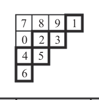
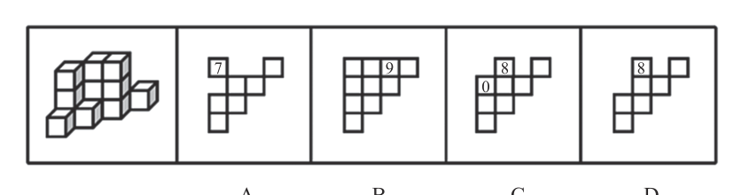

图形推理 · 立体拼合、截面图、三视图与多面体折叠 · 上册 P17
本题考查三视图。 给定堆码图可看作由从上往下共3 层小正方体纸箱组成。上层只有3 个纸箱，中间层至少有3 个纸箱，最下层至少有6 个纸箱，暴露在视野内的纸箱共计12 个，总共15 个纸箱，还有3 个纸箱需要合理放置在视野外的地方。上层的纸箱完全能看到，因此剩余3 个纸箱只能放在中间层或最下层。同时由于纸箱堆码不能悬空，纸箱如果放在中间层的某个位置，在相同位置的最下层一定要有纸箱支撑。视野中的已知纸箱的俯视图为下图中的1、2、3、4、5、6，共计六个区域的集合。和中间层堆放2 个纸箱，无法全部堆放剩余的3 个纸箱，排除。无纸箱，排除。下层和中间层堆放2 个纸箱，同时在0 号区域对应的最下层堆放1 个纸箱；或者在8号区域对应的最下层堆放1 个纸箱，同时在0 号区域对应的最下层和中间层堆放2 个纸箱。以上两种方式均能全部堆放剩余的3 个纸箱，当选。和中间层堆放2 个纸箱，无法全部堆放剩余的3 个纸箱，排除。
A 项 · 比对对比已知俯视图，仅在7 号区域多了纸箱，最多在7 号区域对应的最下层
B 项 · 比对对比已知俯视图，在9 号区域多了纸箱，而题干堆码效果图中9 号区域并
C 项 · 保留对比已知俯视图，在8 号和0 号区域多了纸箱，可以在8 号区域对应的最
D 项 · 比对对比已知俯视图，仅在8 号区域多了纸箱，最多在8 号区域对应的最下层
故正确答案为C。


解析为粉笔原书内容，按「选项排除式」重排；选项行即"先排除"步骤，末行即"后择优"。